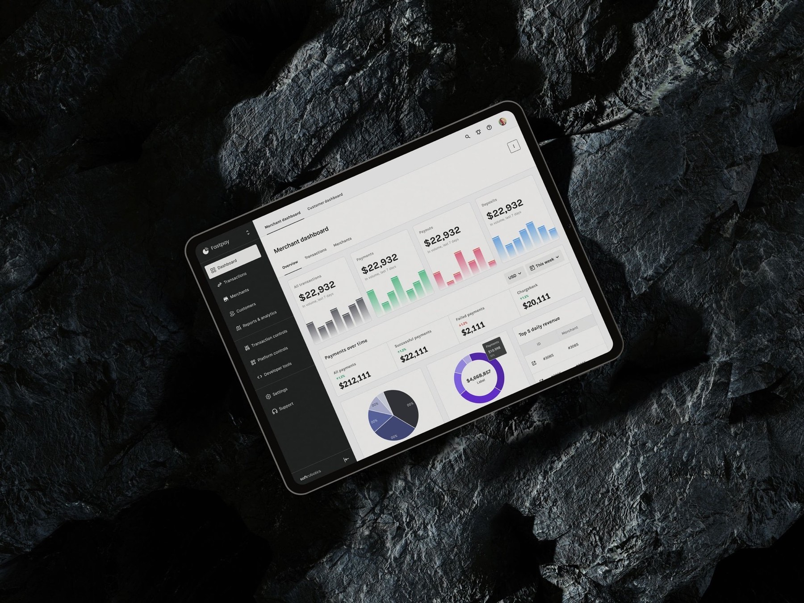
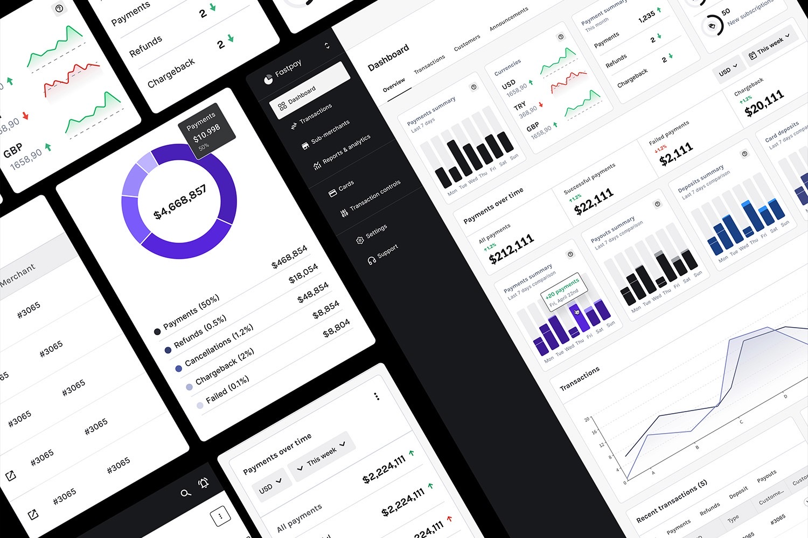
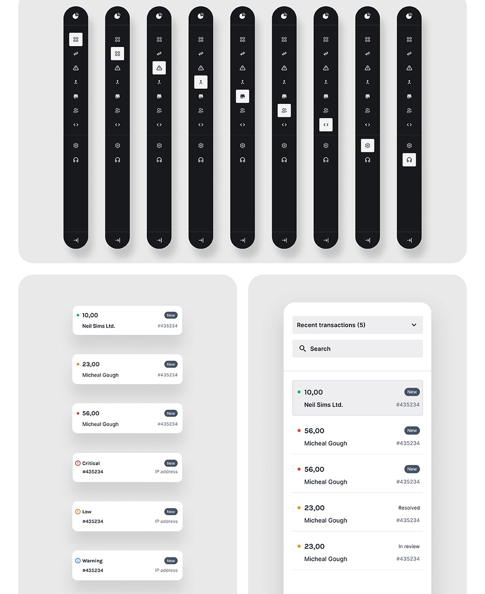
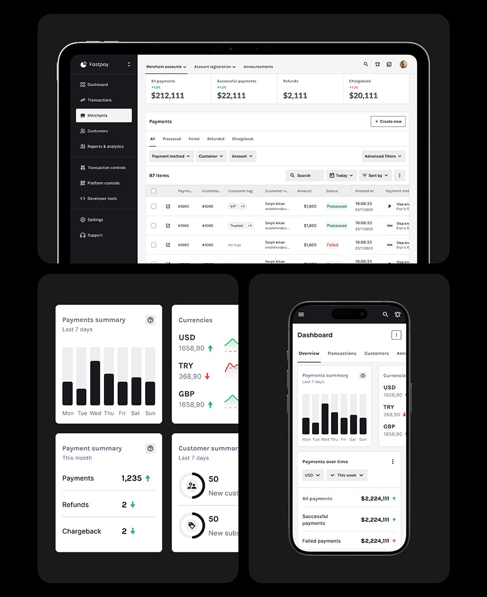
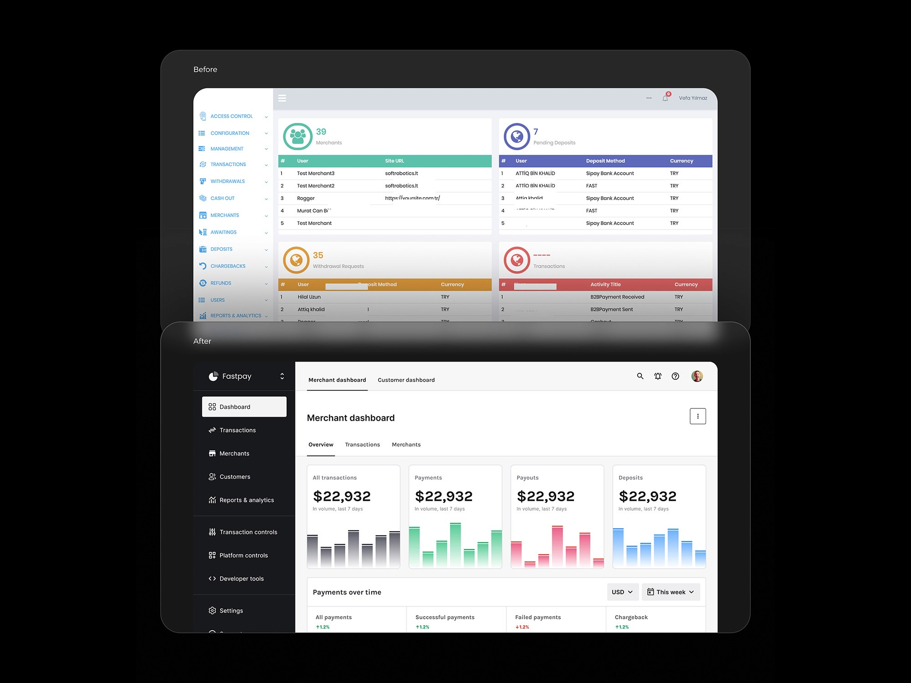
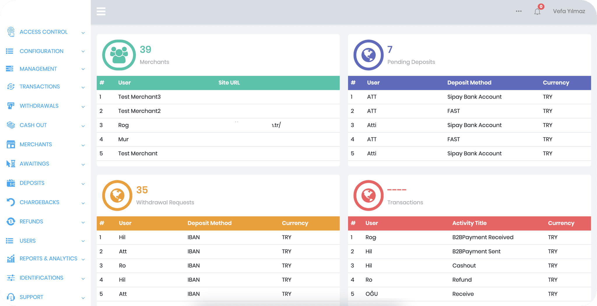
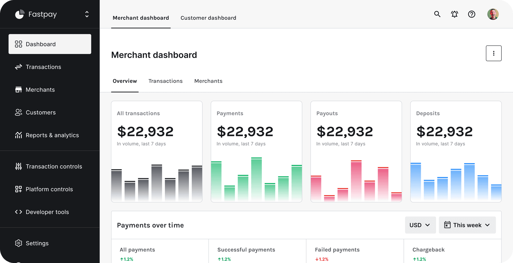

Fintech · Payment gateway platform
Redesigning a data-heavy payment gateway platform
Over 400 screens redesigned across web and mobile — a new information architecture, a design system, and a scalable brand identity for the platform.
Overview
Over 4 billion transactions, one platform
Softrobotics, a leading provider of digital POS, wallet solutions, and open banking services, facilitates over 4 billion transactions through its advanced payment gateway and SaaS platform, catering to both merchants and customers.
Process
An archaic UI on an ineffective IA
UI appeared archaic and didn't meet the requirements. IA was ineffective and required thorough examination (there were multiple duplicates of similar pages/functionalities across the site). POs received inquiries regarding the location of specific features.
The goal was to understand the needs of different user profiles and provide best possible experience while ensuring better understandability, scalability and accessibility. The scope was to redesign the entire platform of 400+ screens with the new information architecture, design system, and a scalable brand identity for the platform.

Scope
Interviews, benchmarks and a full audit
- Conducted stakeholder interviews with the internal team and dedicated over 16 hours to thoroughly reviewing the existing platform. Prepared detailed user flows for the audit, as the platform lacked design files and was only available in coded form. Meticulously documented all links and screens to establish a comprehensive structure as a foundation for redesign.
- Created benchmark reports based on competitors and other platforms, identified common patterns, best practices.
- Initiated a comprehensive audit to identify and prioritize issues, ranging from major to minor, across UX, UI, information architecture, hierarchy, flow integrity, and alignment with user mental models. Adopted a holistic approach to ensure a cohesive and user-centric platform.

Result
A consistent, intuitive information architecture
The revamped UX and UI for Softrobotics delivers a consistent and intuitive information architecture, essential for a tool relied upon daily by hundreds of merchants, customers, and brands for numerous transactions.
View the full case studyContribution
What I did, in summary
- Documented all existing flows.
- Conducted an audit of screens lacking defined flows, and reviewed connections, features, common patterns, and components.
- Redesigned the information architecture.
- Conducted internal stakeholder interviews and card sorting tests.
- Proceeded with refining the UX and finalising UI.



Before / After
The main dashboard, before and after

